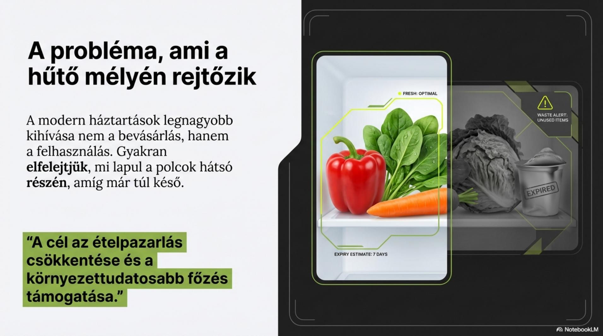
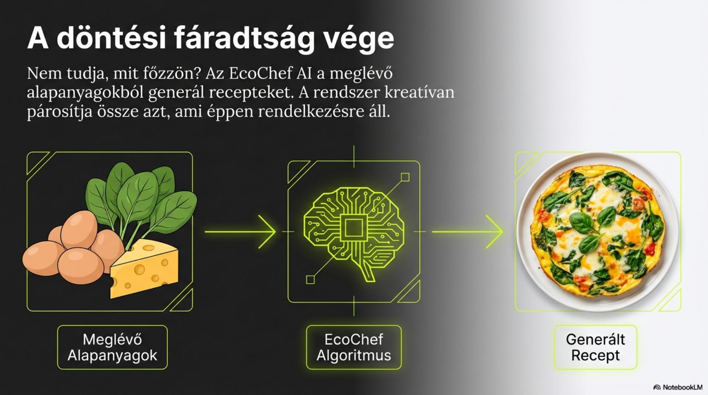
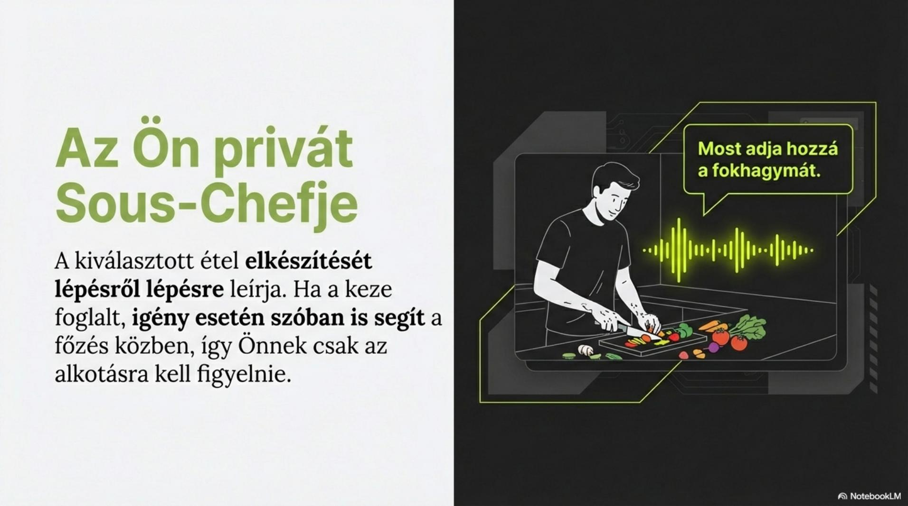

Az EcoChef AI példáján keresztül foglaljuk össze, hogyan áll össze egy mesterséges intelligenciára épülő ötlet problémából, adatokból és hasznos megoldásból.
„Főzz abból, amid van.” – ez az EcoChef AI alapgondolata.
A bemutatott koncepció a háztartási ételpazarlás csökkentését és a környezettudatosabb főzést szeretné támogatni. A rendszer a hűtő tartalmát figyeli, segít észrevenni a romlásnak induló élelmiszereket, és a meglévő alapanyagok alapján receptet javasol.

Az EcoChef AI folyamatosan figyeli, milyen alapanyagok vannak a hűtőben. A felhasználónak nem kell fejben tartania a készletet.
A rendszer jelzi, ha egy élelmiszer hamarosan megromlik, így időben felhasználható.
A meglévő alapanyagokból receptet generál, és a felhasználó ízléséhez is tud igazodni.
Ha egy recepthez nincs meg minden, a rendszer megmutatja, mely hozzávalók hiányoznak.

Figyeld meg: a projektben az MI nem önmagáért jelenik meg. Egy konkrét problémához kapcsolódik, adatokat használ, majd ezekből a felhasználó számára hasznos javaslatot készít.
A bemutató szerint a kiválasztott étel elkészítését a rendszer lépésről lépésre segítené. Ha a felhasználó keze foglalt, igény esetén szóban is támogatná a főzést.

A projekt egyik központi célja, hogy több meglévő alapanyag kerüljön felhasználásra, és kevesebb étel váljon hulladékká. A bemutató ezt az ételpazarlás csökkentésével és a környezettudatosabb főzés támogatásával kapcsolja össze.
Hallgatási feladat: hallgasd meg a kapott EcoChef AI hanganyagot, és írj fel három olyan funkciót, amely a projektbemutatóban is szerepel!
Az EcoChef AI több korábbi témánkhoz is kapcsolódik. Dolgozz párban, és minden ponthoz írjatok legalább egy konkrét példát a projektből!
Az EcoChef AI mintájára találjatok ki egy olyan MI-alapú megoldást, amely egy hétköznapi problémára ad választ.
Milyen problémára ad választ az EcoChef AI?
Hogyan segít a rendszer csökkenteni az ételpazarlást?
Milyen szerepe van a készletfigyelésnek?
Mit készít a rendszer a meglévő alapanyagok alapján?
Sorolj fel három korábbi MI-témát, amelyhez az EcoChef AI kapcsolható!